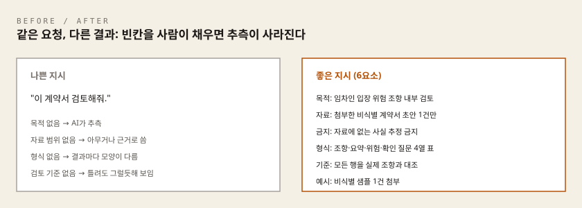
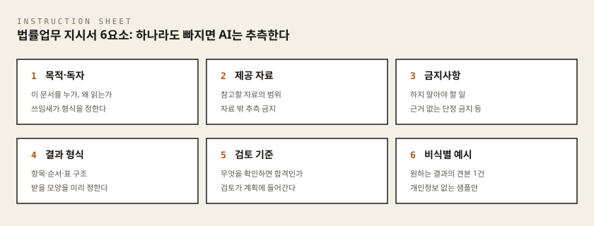

이 차시에서 준비할 것
시작하기 전에 아래 네 가지를 확인합니다. 하나라도 준비되지 않았다면 옆의 링크를 먼저 여세요.
| 준비물 | 30초 확인 방법 | 준비가 안 됐다면 |
|---|---|---|
| AI 도구 1개 — 오늘 지시서를 실행해 볼 도구입니다 | 도구 화면에 입력창이 보이고, 아무 말이나 보냈을 때 답이 돌아옵니다 | 브라우저(엣지·크롬)에서 chatgpt.com · claude.ai · gemini.google.com 중 하나에 로그인하세요. 설치는 필요 없습니다. 아래 도구가 하나도 없다면 참고 |
| 2차시에서 설치한 도구 중 1개 (선택) | 안티그래비티 / 파이(Pi) 중 하나가 실행됩니다 | 안티그래비티 설치가이드 · 파이(Pi) 설치가이드 · 두 도구 모두 공통 준비(Windows) 가이드의 Node.js 설치가 먼저 필요합니다 |
1차시 결과물 — AI 보조로 분류한 업무 목록 | 1차시 실습지에서 AI 보조 칸에 적은 업무가 1개 이상 보입니다 | 떠오르는 업무 1개를 지금 적어 두면 충분합니다 |
| 결과를 붙여 둘 빈 문서 | 메모장·워드·한글 중 아무거나 새 문서가 열려 있습니다 | 시작 버튼 → 메모장 입력 → Enter |
도구가 하나도 없다면
웹 브라우저(엣지, 크롬)에서 ChatGPT·Claude·Gemini 중 하나에 로그인하는 것만으로도 오늘 실습을 전부 마칠 수 있습니다. 설치가 필요 없는 가장 빠른 길입니다. 회사 노트북에서 접속이 막힌다면 임의로 설정을 바꾸지 말고 조별 Facilitator에게 문의합니다.
오늘 처음 나오는 말
한 번만 읽고 넘어가면 됩니다. 뒤에서 다시 설명하지 않습니다.
- 프롬프트: AI에게 보내는 글. 우리가 입력창에 적어 보내는 말 전부를 뜻합니다.
- 새 대화(새 채팅): 이전에 나눈 이야기를 기억하지 못하는, 완전히 비어 있는 대화창.
- 컨텍스트: AI가 답을 만들 때 근거로 삼는 자료. 우리가 붙여넣어 준 문서와 조건이 여기에 해당합니다.
- 제약 조건: AI가 하지 말아야 할 일과 넘지 말아야 할 범위를 미리 못 박은 규칙. 이 차시에서는
금지사항이라고도 부릅니다. - 출력 형식: 결과에 담을 항목과 순서, 표의 열 구성을 미리 정해 둔 규격. 이 차시에서는
결과 형식이라고도 부릅니다. - 예시 기반 지시: 원하는 결과의 샘플 한 건을 함께 보여 주어 말로 설명하기 어려운 요구를 전달하는 방법.
- 합성 자료: 실제 사건이 아닌, 실습용으로 지어낸 가상의 문서. 이 차시의 계약서 발췌가 여기에 해당합니다.
- 비식별: 사람이나 사건을 특정할 수 있는 정보(실명, 연락처, 사건번호)를 지우거나 역할명으로 바꾸는 일.
- 신호등 기준: 1차시에서 배운 정보 판정 기준. 입력해도 되는 정보(초록), 가려서 넣을 정보(노랑), 절대 넣지 않을 정보(빨강)를 나누는 습관입니다.
- 마크다운(
.md): 글자만으로 제목·표·목록을 표현하는 문서 형식. 메모장으로도 열리는 가벼운 텍스트 파일입니다.
실습 폴더 먼저 만들기
오늘 만드는 파일을 한 군데 모아 두면 다음 차시에서 찾기 쉽습니다.
- 바탕 화면의 빈 곳에서 마우스 오른쪽 버튼을 클릭합니다.
새로 만들기→폴더를 선택합니다.- 폴더 이름을
AX실습으로 입력하고 Enter를 누릅니다.
이제 폴더 경로는 C:\Users\사용자이름\바탕 화면\AX실습 입니다. (macOS: ~/Desktop/AX실습)
- 과정: 변호사 AX 나노디그리 (3차시 / 총 7차시)
- 핵심 질문: AI가 추측하지 않고 원하는 방식으로 일하게 하려면?
- 이번 차시의 결과물: 여섯 항목을 갖춘 법률업무 지시서 1부
이 차시에서 배우는 것
AI가 엉뚱한 답을 내놓는 원인의 상당 부분은 모델의 능력이 아니라 지시의 빈틈에 있습니다. 목적과 자료, 금지사항과 결과 형식이 비어 있으면 AI는 그 빈칸을 그럴듯한 추측으로 채웁니다. 법률업무에서 그 추측은 존재하지 않는 근거, 확인되지 않은 사실, 잘못된 단정으로 이어질 수 있습니다.
좋은 지시서의 구조는 새로운 기술이 아닙니다. 신입 변호사나 어쏘에게 일을 맡길 때 쓰는 좋은 업무지시서와 같습니다. 누구를 위한 어떤 목적의 일인지, 어떤 자료를 근거로 삼는지, 무엇을 하면 안 되는지, 결과를 어떤 형식으로 낼지, 무엇을 기준으로 검토할지를 적는 일입니다. 이번 차시에서는 그 구조를 AI에게 그대로 적용해, 1차시에서 AI 보조로 분류한 업무 하나를 재사용 가능한 법률업무 지시서로 만듭니다.
이번 차시를 마치면 다음을 할 수 있습니다.
- 한 문장 명령과 확인 기준이 있는 업무 지시서의 차이를 예시로 설명할 수 있습니다.
- 목적·독자, 컨텍스트, 제약 조건, 출력 형식, 검토 기준, 예시를 갖춘 법률업무 지시서를 작성할 수 있습니다.
- 개인정보와 비밀정보를 일반화한 컨텍스트로 바꿔 지시서에 담을 수 있습니다.
개념 익히기
프롬프트는 질문 한 줄이 아니라 업무지시서입니다
프롬프트는 AI에 전달하는 목표·자료·조건의 묶음 전체를 말합니다. "계약서 검토해줘" 같은 한 줄은 지시로서 부족합니다. 무엇을 위해, 무엇을 근거로, 어떤 모양으로 검토하라는 것인지 정해지지 않았기 때문입니다. 그래서 AI는 그 빈칸을 스스로 추측해 채웁니다.
그래서 이 과정에서는 프롬프트를 잘 쓰는 요령을 외우지 않습니다. 대신 일 잘하는 사람에게 업무를 맡길 때 쓰는 지시서를 AI용으로 만듭니다. 지시가 구체적일수록 AI가 추측할 공간이 줄어들고, 사람이 검토할 지점이 분명해집니다. 그리고 지시서는 한 번 쓰고 버리는 문장이 아니라, 결과를 보며 다듬어 재사용하는 업무 자산입니다.
컨텍스트: 배경은 일반화해서 제공합니다
컨텍스트는 AI가 현재 작업을 이해하는 데 필요한 배경과 참고 범위입니다. AI에게 필요한 것은 사건의 전부가 아니라, 판단에 필요한 배경의 요약입니다.
- 사건 유형, 문서의 목적, 적용 시점과 독자를 일반화해 적으면 대부분의 업무에 충분합니다.
- 필요하다는 이유만으로 실제 의뢰인 정보 전체를 입력하지 않습니다. 1차시에서 배운 신호등 기준이 지시서에도 그대로 적용됩니다.
- 실명은
임대인 A,임차인 B처럼 역할명으로, 날짜와 금액은 판단에 필요한 수준으로만 바꿔 적습니다.
제약 조건: 추측을 막는 규칙입니다
제약 조건은 AI가 하지 말아야 할 일과 넘지 말아야 할 범위를 명시한 규칙입니다. 예를 들면 다음과 같습니다.
- 제공한 자료에 없는 사실을 추정하지 않습니다.
- 확실하지 않은 부분은 "자료에서 확인되지 않음"이라고 표시합니다.
- 법적 결론을 단정하지 않고 검토가 필요한 쟁점으로 남깁니다.
- 판례·법령을 인용할 때는 출처를 함께 적습니다.
"모르면 모른다고 답하라"는 지시는 간단하지만 효과가 큰 안전장치입니다. 다만 제약 문구만으로 안전이 자동 보장되지는 않습니다. 검토 기준과 사람의 확인이 항상 뒤따라야 합니다.
출력 형식: 결과의 모양을 미리 고정합니다
출력 형식은 결과에 포함할 항목, 순서, 표나 문장 구조를 미리 정한 규격입니다. 예컨대 사실 | 쟁점 | 근거 | 추가 확인사항의 네 칸을 고정하면, 빈칸과 오류가 눈에 보입니다.
- 형식이 고정되면 결과마다 비교가 가능해지고, 누락된 항목이 즉시 드러납니다.
- 다만 형식이 정확해도 내용의 사실성과 법적 타당성은 별도로 검토해야 합니다.
예시 기반 지시: 샘플 한 건이 긴 설명보다 정확합니다
예시 기반 지시는 원하는 입력과 결과의 예시를 함께 보여주는 방식입니다. 문체, 표의 열 구성, 분류 기준처럼 말로 설명하기 어려운 요구는 샘플 한 건이 가장 정확하게 전달합니다.
예시 문서에도 개인정보나 비공개 사건정보를 넣지 않습니다. 예시는 합성 자료나 비식별 처리를 마친 자료로만 만듭니다.
나쁜 지시와 좋은 지시를 비교해 봅니다

같은 문서, 같은 도구라도 지시가 달라지면 결과의 쓸모가 달라집니다.
나쁜 지시
이 계약서 검토해줘.
좋은 지시 (합성 자료 기준)
목적: 임차인 입장에서 위험 조항을 찾기 위한 내부 검토 초안. 독자는 담당 변호사.
자료: 첨부한 비식별 임대차계약서 초안 1건만 근거로 사용.
금지: 자료에 없는 사실 추정 금지, 조항의 유불리를 단정하는 결론 금지.
형식: 조항 번호, 내용 요약, 위험 요인, 추가 확인 질문의 4열 표.
확인 기준: 모든 행이 실제 조항 번호와 연결되는지 사람이 대조한다.
나쁜 지시는 목적도, 근거 자료의 범위도, 결과의 모양도 AI의 추측에 맡깁니다. 좋은 지시는 그 빈칸을 사람이 미리 채워 둡니다. 그래서 결과가 빗나가도 어느 항목이 문제였는지 짚어서 고칠 수 있습니다.
지시서 여섯 항목 정리

| 항목 | 묻는 질문 | 지시서에 적는 것 |
|---|---|---|
| 목적·독자 | 누구를 위해 왜 하는가 | 업무 목적, 결과를 읽을 사람 |
| 제공 자료(컨텍스트) | 무엇을 근거로 삼는가 | 사건 유형, 문서 목적, 참고 범위 |
| 금지사항(제약 조건) | 무엇을 하면 안 되는가 | 추측 금지, 자료 밖 단정 금지 |
| 결과 형식(출력 형식) | 어떤 모양으로 받는가 | 항목, 순서, 표·문장 구조 |
| 검토 기준 | 무엇을 보고 합격시키는가 | 사람이 확인할 항목 목록 |
| 비식별 예시(예시 기반 지시) | 어떤 결과가 정답에 가까운가 | 원하는 입력·결과 샘플 1건 |
여섯 항목은 신입에게 일을 맡길 때의 좋은 업무지시서와 같은 구조입니다. 항목이 하나 빠질 때마다 AI의 추측이 그 자리를 대신한다는 점을 기억해 주세요.
예를 들어 컨텍스트는 "검토해 줘"가 아니라 "수탁자 관점에서 가상의 용역계약서 제7조만 검토한다. 근거는 제공한 조항으로 한정한다"처럼 누구의 관점에서, 무엇을, 어느 자료 범위로 다룰지 적는 칸입니다.
(이 차시 랩의 합성 자료에서는 수탁자가 용역을 수행하는 수급인 B에 해당합니다.)
스스로 해보기
아래 지시 문장 가운데 하나를 골라, 여섯 항목 표에 비추어 무엇이 빠져 있는지, 어떤 위험이 숨어 있는지 생각해 보세요. 정답을 찾는 것보다, 빈칸을 발견하는 눈을 기르는 것이 목적입니다.
- "이 사건 관련 판례 찾아서 정리해줘."
- "첨부한 상담 기록 전체를 읽고 사건의 쟁점을 뽑아줘."
- "첨부한 비식별 계약서 초안에서 위험 조항을 4열 표로 정리하되, 자료에 없는 사실은 추정하지 마."
- "결과는 알아서 보기 좋게 정리해줘."
- "이 계약이 유효한지 결론을 내려줘."
각 문장에 대해 여섯 질문을 던져 보세요. ① 목적과 독자는 누구입니까? ② 근거 자료의 범위는 어디까지입니까? ③ 입력하면 안 되는 정보는 무엇입니까? ④ 결과 형식은 정해졌습니까? ⑤ 합격 기준은 무엇입니까? ⑥ AI가 멈추고 사람이 판단할 지점은 어디입니까?
⑥은 이 과정에서 계속 쓰는 질문입니다. "AI가 멈추고 사람이 판단할 지점"은 AI에게 끝까지 맡기지 않고 사람이 반드시 손을 대야 하는 대목을 뜻합니다. 법적 결론, 의뢰인에게 나갈 문장, 판례·법령 인용의 진위 확인이 대표적입니다.
실습: 법률업무 지시서 작성
실습은 아래 3차시 실습지를 따라 진행합니다. (파일로 남길 때 권장 이름: lawyer-ax-worksheet-03-instruction-design.md) 전체 흐름은 다음과 같습니다.
- 대상 업무 고르기: 1차시
AX 업무 지도에서AI 보조로 분류한 업무 하나를 고릅니다. - 나쁜 지시를 좋은 지시로: 평소처럼 한 줄 명령을 적어 보고, 여섯 가지 점검 질문으로 그 문장의 빈틈을 찾습니다.
- 지시서 여섯 항목 작성하기: 찾은 빈틈을 하나씩 메워 목적·독자, 컨텍스트, 제약 조건(추측 금지 포함 세 가지 이상), 출력 형식, 검토 기준, 비식별 예시를 완성합니다.
- 도구에 실행해 보기: 웹 AI(ChatGPT·Claude·Gemini), 안티그래비티, 파이(Pi) 중 편한 도구 하나에 먼저 한 줄 명령을, 다음으로 지시서를 입력해 두 결과를 나란히 비교합니다.
- 지시서 다듬기: 비교에서 찾은 차이를 줄이는 수정 한 가지를 지시서에 반영합니다.
실습할 때 다음 규칙을 지켜 주세요.
- 지시서와 컨텍스트에 실제 의뢰인의 이름, 연락처, 사건번호를 적지 않습니다.
- 사건 유형과 문서 목적은
주거용 임대차계약 검토처럼 일반화해서 씁니다. - 예시로 붙이는 자료는 합성 자료나 비식별 처리를 마친 샘플만 사용합니다.
- 지시서가 좋아져도 사람의 검토는 생략하지 않습니다. 지시서는 쓰는 것으로 끝나지 않습니다. 도구에 넣고, 결과를 보고, 고쳐야 완성됩니다.
스스로 점검
이번 차시를 마치며 아래 문장을 완성해 보세요.
- "내 지시서에서 AI의 추측을 막는 제약 조건은 ________입니다."
- "컨텍스트를 제공하기 전에 일반화하거나 가릴 정보는 ________입니다."
- "결과를 합격시키기 전에 내가 직접 확인할 기준은 ________입니다."
저장 권장 파일명:
lawyer-ax-worksheet-03-instruction-design.md
이 실습지는 종이에 적어도 되고, 메모장에 옮겨 적어도 됩니다. 파일로 남길 때는 위 이름을 쓰세요. 이 과정의 실습지는 모두lawyer-ax-worksheet-0N-{주제}.md규칙을 따르므로, 7차시가 끝나면 한 폴더에서 차시 순서대로 정렬됩니다. (저장 방법은 이 차시 맨 끝보관 방법참고)
실습 목표
한 문장 명령을 목적·자료·금지사항·형식·검토 기준·예시를 갖춘 법률업무 지시서로 바꾸고, 도구에 실행해 결과를 확인한 뒤 한 번 다듬습니다.
실습 규칙
- 지시서와 컨텍스트에 실제 의뢰인의 이름, 연락처, 사건번호를 적지 않습니다.
- 사건 유형과 문서 목적은
주거용 임대차계약 검토처럼 일반화해서 씁니다. - 예시로 붙이는 자료는 합성 자료나 비식별 처리를 마친 샘플만 사용합니다.
- 지시서가 좋아져도 사람의 검토는 생략하지 않습니다.
1단계. 대상 업무 고르기
1차시 실습지에서 AI 보조로 분류한 업무 중 하나를 고릅니다. 1차시 결과가 없다면 상담 메모 쟁점 정리를 그대로 써도 됩니다.
- 선택한 업무:
- 이 업무를 고른 이유:
- AI가 만들 초안 또는 정리 결과:
- 결과를 읽을 사람:
예: 상담 메모 쟁점 정리 → 자주 반복되고 결과물 형식이 일정해서 → 쟁점표 초안 → 담당 변호사
고르는 요령: 한 번 하고 끝나는 업무보다 매달 반복되는 업무를 고르면 지시서를 다듬을 기회가 많아집니다.
2단계. 나쁜 지시를 좋은 지시로
먼저 평소처럼 한 줄로 명령을 적어보고, 그 문장의 빈틈을 찾습니다.
나의 한 줄 명령: ________
| 점검 질문 (여섯 가지) | 한 줄 명령에서 모호한 부분 |
|---|---|
| ① 목적과 독자는 누구인가? | |
| ② 근거 자료의 범위는 어디까지인가? | |
| ③ 입력하면 안 되는 정보는 무엇인가? | |
| ④ 결과 형식은 정해졌는가? | |
| ⑤ 합격 기준은 무엇인가? | |
| ⑥ AI가 멈추고 사람이 판단할 지점은 어디인가? |
비어 있는 칸이 많을수록 AI가 추측으로 채울 공간이 넓다는 뜻입니다. ⑥은 특히 자주 빠지는 질문입니다. 법적 결론, 의뢰인에게 나갈 문장, 판례·법령 인용의 진위처럼 사람이 반드시 손을 대야 하는 대목을 미리 정해 두는 칸입니다.
작성 예시 (참고용)
상담 메모 쟁점 정리해줘라는 한 줄 명령을 위 표로 점검하면 이렇게 나옵니다.
| 점검 질문 | 모호한 부분 |
|---|---|
| ① 목적·독자 | 나만 볼 메모인지, 담당 변호사 보고용인지 안 적혀 있음 |
| ② 근거 자료 범위 | 메모 외의 일반 지식을 써도 되는지 안 적혀 있음 |
| ③ 입력 금지 정보 | 메모에 남아 있는 실명·연락처를 가릴지 안 적혀 있음 |
| ④ 결과 형식 | 줄글인지 표인지 안 정해짐 |
| ⑤ 합격 기준 | 없음 |
| ⑥ 사람이 판단할 지점 | 없음 — AI가 쟁점의 법적 결론까지 단정할 수 있음 |
3단계. 지시서 여섯 항목 작성하기
2단계에서 찾은 빈틈을 하나씩 메워 지시서를 완성합니다.
1. 목적·독자
이 결과를 누가 왜 읽는지 두 문장으로 적습니다.
- 업무 목적:
- 결과를 읽을 사람:
2. 제공 자료(컨텍스트)
사건 유형과 문서 목적을 일반화해 적고, 가릴 정보를 먼저 정합니다.
- 제공할 자료(일반화한 이름으로):
- 익명화하거나 삭제할 정보:
3. 금지사항(제약 조건)
추측 금지를 포함해 세 가지 이상 적습니다.
- 금지 1: 제공한 자료에 없는 사실을 추정하지 않는다.
- 금지 2:
- 금지 3:
금지 1은 이미 채워져 있습니다. 아래에서 두 가지를 더 골라 금지 2·3에 옮겨 적으세요.
- 제공한 자료에 없는 사실은 추정하지 않습니다. (이미 금지 1에 적혀 있음)
- 확인되지 않은 내용은
자료에서 확인되지 않음으로 표시합니다. - 승소 가능성, 유불리, 법적 결론을 단정하지 않습니다.
- 근거가 된 원문 위치를 결과마다 표시합니다.
- 실제 이름·연락처·사건번호를 출력하지 않습니다.
4. 결과 형식(출력 형식)
결과에 포함할 항목과 순서를 고정합니다.
- 형식(표의 열 구성 또는 문장 구조):
- 항목 순서:
5. 검토 기준
결과를 합격시키기 전에 사람이 확인할 항목을 적습니다.
- 확인 항목 1:
- 확인 항목 2:
- 최종 승인할 사람:
6. 비식별 예시(예시 기반 지시)
원하는 결과의 샘플 한 건을 만들어 붙입니다. 여기서 "비식별 예시"는 실제 사건자료가 아니라, 역할명과 가상 사실만 사용해 AI가 따라야 할 결과 모양을 보여 주는 정답 예시입니다.
- 예시로 붙일 샘플:
- 예시에 식별정보가 없는지 확인:
확인 / 미확인
여섯 항목 중 가장 자주 빠지는 것은 검토 기준입니다. "무엇을 보면 이 결과를 승인할 수 있는가"를 예/아니오로 답할 수 있는 문장으로 적어 두세요.
4단계. 도구에 실행해 보기
웹 AI(ChatGPT·Claude·Gemini), 안티그래비티, 파이(Pi) 중 하나를 골라 실행합니다. 설치한 도구가 없다면 브라우저에서 웹 AI에 로그인하는 것만으로 충분하고, 결과도 같습니다. 헤르메스는 알림·조율용 도구라 긴 지시서 실습에는 쓰지 않습니다.
- 사용한 도구:
- 먼저 2단계의 한 줄 명령을 넣고 결과를 받아 둡니다.
- 다음으로 3단계의 지시서를 넣고 두 결과를 나란히 비교합니다.
화면에서 확인할 것: 입력창 아래에 답변이 흘러나오기 시작하면 실행된 것입니다. 답변이 끝나면 글자 생성이 멈추고 커서가 다시 입력창으로 돌아옵니다.
| 비교 항목 | 한 줄 명령의 결과 | 지시서의 결과 |
|---|---|---|
| 형식이 원하는 대로 나왔는가? | ||
| 자료에 없는 내용을 지어냈는가? | ||
| 사람이 확인할 지점이 드러나는가? |
- 기대와 가장 크게 달랐던 부분:
5단계. 지시서 다듬기
4단계에서 찾은 차이를 줄이는 수정 한 가지를 지시서에 반영합니다.
- 고칠 항목(여섯 항목 중 하나):
- 수정 전 문구:
- 수정 후 문구:
아래 문장을 완성하세요.
나의 지시서에서 AI의 추측을 막는 제약 조건은 ________입니다.
결과를 합격시키기 전에 나는 ________를 직접 확인하겠습니다.
이 지시서는 ________ 업무가 생길 때마다 다듬어 다시 사용하겠습니다.
동료 검토
짝과 실습지를 바꾸어 아래 세 가지만 확인합니다.
- 여섯 항목이 모두 채워져 있고 실제 의뢰인 정보가 없다.
- 추측을 막는 제약 조건이 구체적이다.
- 사람이 결과를 확인하고 승인할 기준이 있다.
동료의 한 문장 제안
이 지시서는 ________ 항목을 더 구체적으로 적으면 결과가 안정되겠습니다.
수업 종료 전 제출
- 여섯 항목을 갖춘 법률업무 지시서 1부
- 한 줄 명령과 지시서의 결과 차이 1가지
- 이번 실습에서 반영한 지시서 수정 1가지
- 다음 차시 리서치 검증에서 검증할 지시서 결과물 1개
- 과정: 변호사 AX 나노디그리 (3차시 / 총 7차시)
- 작성지: 위
3차시 실습지(파일로 남길 때 권장 이름:lawyer-ax-worksheet-03-instruction-design.md)
실습 개요
이 랩은 수업 진도와 무관하게 혼자서 진행할 수 있는 복습·자율 실습 자료입니다. 기본 LAB 1~3을 마치고 시간 여유가 있다면, 마무리 전의 더 해보기 섹션에서 심화 미션에 도전해 보세요. 세 개의 랩은 교재에서 정리한 지시서의 구성 요소 — 여섯 항목(목적·독자, 제공 자료, 금지사항, 결과 형식, 검토 기준, 비식별 예시) — 가 실제 결과의 품질을 어떻게 바꾸는지 실전으로 되짚는 과정입니다.
- 목표: AI 도구를 직접 조작하며, 한 줄 명령과 지시서의 결과 차이를 확인하고, 여섯 항목을 갖춘 법률업무 지시서를 완성해 재현성까지 검증합니다.
- 소요 시간: 총 45~60분 (LAB 1: 15분, LAB 2: 20분, LAB 3: 15분, 마무리: 5~10분)
- 난이도: 전 과정 초급. 터미널 명령을 입력할 일은 없습니다.
준비물:
- AI 도구 1개 계정 로그인 완료 — ChatGPT, Claude, Gemini 중 편한 것 하나를 고릅니다. 2차시에서 설치한 안티그래비티나 파이(Pi)를 써도 됩니다.
- 아래 여섯 항목 표를 옆에 두고 진행합니다.
- 결과를 붙여 둘 빈 문서(워드, 한글, 메모장 무엇이든 좋습니다).
- 완성 결과물: 여섯 항목을 갖춘 법률업무 지시서 1부 (재현성 검증까지 마친 상태)
어떤 도구로 할지 고르기
| 고르는 기준 | 추천 도구 | 준비 링크 |
|---|---|---|
| 설치 없이 가장 빠르게 | 웹 AI (ChatGPT·Claude·Gemini) | 브라우저에서 로그인만 하면 됩니다 |
| 내 노트북의 파일을 함께 다루고 싶다 | 안티그래비티 | 안티그래비티 설치가이드 |
| 터미널에서 가볍게 쓰고 싶다 | 파이(Pi) | 파이(Pi) 설치가이드 |
헤르메스는 알림·조율용 도구라 이 랩의 긴 지시서 실습에는 쓰지 않습니다. 오늘은 웹 AI, 안티그래비티, 파이(Pi) 중에서 고르세요.
이 랩의 모든 프롬프트는 위 세 가지 도구 어디에 넣어도 동작합니다. 처음이라면 웹 AI를 권합니다.
실습 규칙
- 실제 의뢰인의 이름, 연락처, 사건번호를 어떤 프롬프트에도 입력하지 않습니다.
- 진행 중인 사건의 사실관계를 입력하지 않습니다. 이 랩은 전부 가상 사례로 진행합니다.
- 실명이 필요하면
발주사 A,수급인 B처럼 역할명으로 바꿔 적습니다. - 예시로 붙이는 자료는 이 랩이 제공하는 합성 자료만 사용합니다.
- 지시서가 좋아져도 결과에 대한 사람의 검토는 생략하지 않습니다.
지시서 여섯 항목 (옆에 두고 진행하세요)
이 표가 오늘 랩의 기준표입니다. 아래 LAB에서 "여섯 항목"이라고 하면 전부 이 표를 가리킵니다.
| 항목 이름 | 무엇을 적는가 | 빠지면 생기는 일 |
|---|---|---|
| 목적·독자 | 이 결과를 누가, 왜 읽는지 | 보고용인지 메모용인지 몰라 문체와 깊이가 매번 달라집니다 |
| 제공 자료(컨텍스트) | 근거로 삼을 자료를 일반화한 이름으로 | AI가 학습한 일반 지식을 근거처럼 섞어 씁니다 |
| 금지사항(제약 조건) | 하면 안 되는 일 세 가지 이상 (추측 금지 포함) | 자료에 없는 사실을 그럴듯하게 지어냅니다 |
| 결과 형식(출력 형식) | 항목 구성과 순서, 표의 열 이름 | 매번 다른 모양으로 나와 그대로 쓰지 못합니다 |
| 검토 기준 | 사람이 예/아니오로 답할 수 있는 확인 항목 | 무엇을 보고 승인할지 몰라 검토가 감으로 흐릅니다 |
| 비식별 예시 | 원하는 결과의 짧은 샘플 1건 (역할명 사용) | 원하는 수준을 말로만 설명하게 되어 품질이 흔들립니다 |
시작 전 점검
- ChatGPT, Claude, Gemini 중 하나에 로그인되어 있습니다. (또는 안티그래비티·파이가 실행됩니다.)
- 새 대화(새 채팅)를 여는 방법을 알고 있습니다. 아래 "새 대화 여는 법"을 참고하세요.
- 위 여섯 항목 표를 옆에 두고 진행할 준비가 되었습니다.
- 결과를 복사해 붙여 둘 빈 문서를 열어 두었습니다.
- 오늘 입력할 내용에 실제 사건 정보가 없는지 스스로 확인했습니다.
새 대화 여는 법 (30초)
- 웹 AI: 화면 왼쪽 위의
새 채팅(또는+) 버튼을 클릭합니다. 대화 목록이 사라지고 빈 입력창만 남으면 성공입니다. - 안티그래비티: 채팅 패널 위쪽의
+(새 대화) 아이콘을 클릭합니다. - 파이(Pi): 터미널(글자로 컴퓨터에 명령을 내리는 창) 창을 닫았다가 다시 열고
pi를 입력합니다.
긴 프롬프트를 붙여넣을 때 (초보자 필독)
이 랩의 프롬프트는 여러 줄입니다. 붙여넣기가 중간에 끊기면 결과가 엉킵니다.
- 코드 블록의 글자를 마우스로 처음부터 끝까지 드래그해 선택하고
Ctrl + C로 복사합니다. (macOS:Cmd + C) - AI 입력창을 클릭한 뒤
Ctrl + V로 붙여넣습니다. 서식이 깨져 보이면Ctrl + Shift + V(서식 없이 붙여넣기)를 씁니다. - 입력창 안에서 줄을 바꿀 때는
Shift + Enter를 누릅니다. 그냥Enter를 누르면 쓰다 만 채로 전송됩니다. 채팅창에서 Enter는 줄바꿈이 아니라 즉시 전송이기 때문입니다. - 붙여넣은 글이 입력창에 전부 들어왔는지 눈으로 확인한 뒤
Enter를 눌러 보냅니다.
오늘처럼 긴 프롬프트는 빈 문서에서 완성한 뒤 통째로 붙여 넣는 것이 가장 안전합니다.
LAB 1. 나쁜 지시 vs 좋은 지시 비교 실험
소요 시간 15분 · 난이도 초급
이걸 하면 실무에서 무엇이 좋아지는가 — 같은 계약서라도 지시를 바꾸면 검토 결과가 바로 쓸 수 있는 형태로 나온다는 것을 눈으로 확인하게 됩니다.
배경
같은 문서, 같은 도구라도 지시가 달라지면 결과의 쓸모가 달라집니다. 이 랩에서는 가상의 용역계약 검토 업무를 두 가지 방식으로 시켜 봅니다. 먼저 한 줄 명령을, 다음으로 여섯 항목을 갖춘 지시서를 입력해 결과를 나란히 비교합니다.
따라 하기
- AI 도구에서 새 대화를 엽니다. 화면 상태: 대화 기록이 하나도 없는 빈 화면에 입력창만 보입니다.
아래
나쁜 지시프롬프트를 그대로 복사해 붙여넣고 실행합니다. 합성 계약 조항이 함께 들어 있으므로 파일 첨부는 필요 없습니다.이 계약서 검토해줘. [합성 자료 — 가상의 콘텐츠 제작 용역계약 초안 발췌] 제4조(대금) 발주사 A는 수급인 B에게 용역대금 3,000만 원을 지급한다. 지급 시기는 협의하여 정한다. 제7조(지식재산권) 용역 결과물에 관한 일체의 권리는 발주사 A에 귀속된다. 제9조(계약 해지) 발주사 A는 필요하다고 판단하는 경우 계약을 해지할 수 있다. 제11조(손해배상) 수급인 B가 계약을 위반한 경우 발주사 A가 입은 모든 손해를 배상한다.
결과를 빈 문서에 복사해 두고,
결과 1이라고 표시합니다.- 복사 요령: 답변 아래쪽의
복사(네모 두 개가 겹친 모양) 아이콘을 누르면 답변 전체가 복사됩니다. 메모장에서Ctrl + V로 붙여넣고, 맨 윗줄에결과 1이라고 적어 둡니다.
- 복사 요령: 답변 아래쪽의
같은 대화에서 이어서, 아래
좋은 지시프롬프트를 복사해 붙여넣고 실행합니다.방금 준 합성 계약 발췌를 다시 검토해 주세요. 이번에는 아래 지시서를 따릅니다. 목적·독자: 수급인 B 입장에서 위험 조항을 찾기 위한 내부 검토 초안입니다. 독자는 담당 변호사입니다. 제공 자료(컨텍스트): 위에서 제공한 가상의 콘텐츠 제작 용역계약 초안 발췌 4개 조항만 근거로 사용합니다. 금지사항(제약 조건): - 제공한 조항에 없는 사실을 추정하지 않습니다. - 확실하지 않은 부분은 "자료에서 확인되지 않음"이라고 표시합니다. - 조항의 유불리를 단정하는 법적 결론을 내리지 않습니다. 결과 형식(출력 형식): 조항 번호 | 내용 요약 | 위험 요인 | 추가 확인 질문 의 4열 표로만 작성합니다. 검토 기준: 표의 모든 행이 실제 조항 번호(제4조, 제7조, 제9조, 제11조)와 연결되어야 합니다.
- 결과를 빈 문서에 복사해 두고,
결과 2라고 표시합니다. 두 결과를 나란히 놓고 비교합니다. 형식, 근거 범위, 확인해야 할 지점이 어떻게 다른지 살펴봅니다.
- 나란히 보는 요령: 메모장 창을 클릭하고
Windows 키 + ←를 누르면 화면 왼쪽 절반에 붙습니다. 브라우저 창을 클릭하고Windows 키 + →를 누르면 오른쪽 절반에 붙어 두 화면을 함께 볼 수 있습니다.
- 나란히 보는 요령: 메모장 창을 클릭하고
예상 결과
- 결과 1은 형식이 그때그때 다르고, 4개 조항 밖의 일반론(계약서에 흔히 넣는 조항 제안 등)이 섞여 나오는 경우가 많습니다.
- 결과 2는 4열 표로 고정되고, 각 행이 조항 번호와 연결되며, 자료에 없는 부분은 "자료에서 확인되지 않음"으로 표시됩니다.
체크포인트
- 결과 1과 결과 2를 모두 저장했습니다.
- 결과 2가 지정한 4열 표 형식으로 나왔습니다.
- 두 결과의 차이 중 가장 큰 것 한 가지를 한 문장으로 적었습니다.
잘 안 될 때
- 결과 2가 표로 나오지 않으면: "결과 형식을 지키지 않았습니다. 4열 표로만 다시 작성해 주세요."라고 이어서 입력합니다.
- 결과 2에 자료 밖 내용이 섞이면: 금지사항 첫 줄을 "제4조, 제7조, 제9조, 제11조 외의 내용은 언급하지 않습니다."처럼 더 좁혀 다시 실행합니다.
- 도구가 계약 발췌를 기억하지 못하면: 좋은 지시 프롬프트 아래에 합성 자료를 한 번 더 붙여넣습니다.
- 프롬프트가 중간에 잘려 전송됐으면: 답변을 무시하고, 새 대화를 열어 처음부터 다시 붙여넣습니다. 잘린 프롬프트 위에 이어 붙이면 결과가 엉킵니다.
- 표가 화면 밖으로 넘쳐 읽기 어려우면: "표 대신 조항별로 4개 항목을 줄바꿈해서 적어 주세요."라고 요청합니다. 형식만 바꾸는 것이므로 실습 목적에는 영향이 없습니다.
💡 팁 — 항목이 안 지켜질 때는 문장이 검증 가능한지부터 봅니다. "정확하게 써줘"는 지켰는지 확인할 방법이 없는 지시입니다. "인용하는 판례마다 사건번호와 선고일을 붙인다", "결론은 세 문장 이내로 쓰되 승소 가능성을 단정하는 표현은 쓰지 않는다"처럼 지켰는지 여부를 결과물에서 바로 확인할 수 있는 문장이어야 지시서가 일을 합니다. 그리고 지시서 마지막에는 보고 규칙 한 줄을 상비합니다: "제공된 자료에 없는 내용은 만들지 말고 '확인 필요'로 표시해 보고한다." — 4차시 검증표에서 원문 대조 전의 모든 주장을 '미확인'으로 취급하는 것과 같은 원칙입니다.
AI가 답변에 법령 조문이나 판례를 언급했다면, 지금은 그대로 두고 넘어갑니다. 그 인용이 실제로 존재하는지 확인하는 방법은 4차시에서 다룹니다.
LAB 2. 내 업무의 지시서를 AI와 함께 작성하기
소요 시간 20분 · 난이도 초급
이걸 하면 실무에서 무엇이 좋아지는가 — 매번 새로 설명하던 업무를, 붙여넣기만 하면 되는 한 장짜리 자산으로 바꾸게 됩니다.
배경
이제 여섯 항목 구조를 내 업무에 적용합니다. 1차시에서 AI 보조로 분류한 업무 하나를 고르되, 실제 사건 대신 그 업무의 가상 버전을 만듭니다. 떠오르는 업무가 없으면 가상의 내용증명 초안 작성을 그대로 사용해도 됩니다. 이 랩에서는 AI를 결과 생성 도구가 아니라 지시서 작성을 돕는 동료로 사용합니다.
따라 하기
- 새 대화를 엽니다. (LAB 1 대화의 영향을 받지 않게 하기 위해서입니다.) 화면 상태: LAB 1의 표가 화면에 남아 있으면 새 대화가 아닙니다. 다시
새 채팅을 누르세요. 아래 프롬프트의 대괄호 두 곳을 내 업무로 바꾼 뒤 복사해 붙여넣습니다. 바꾸지 않고 그대로 실행해도 됩니다.
- 바꾸는 방법: 메모장에 먼저 붙여넣고
[부터]까지를 통째로 지운 뒤 내 업무를 적습니다. 대괄호 기호까지 함께 지웁니다.
저는 변호사이고, AI에게 맡길 업무의 지시서를 만들려고 합니다. 업무: [가상의 내용증명 초안 작성 — 용역대금을 지급하지 않는 상대방에게 보내는 지급 촉구] 사례 설정: [전부 가상 사례입니다. 발주사 A가 수급인 B에게 용역대금 3,000만 원을 두 달째 지급하지 않은 상황으로 가정합니다.] 아래 여섯 항목을 갖춘 법률업무 지시서 초안을 만들어 주세요. 1. 목적·독자 2. 제공 자료(컨텍스트) — 사건 유형과 문서 목적을 일반화해서 3. 금지사항(제약 조건) — "제공한 자료에 없는 사실을 추정하지 않는다"를 포함해 세 가지 이상 4. 결과 형식(출력 형식) — 항목과 순서를 고정해서 5. 검토 기준 — 사람이 확인할 항목 목록으로 6. 비식별 예시(예시 기반 지시) — 원하는 결과의 짧은 샘플 1건, 실명 대신 역할명 사용 작성 후, 이 지시서에서 AI가 추측으로 채울 위험이 남은 곳 두 군데를 지적해 주세요.
- 바꾸는 방법: 메모장에 먼저 붙여넣고
AI가 만든 초안을 읽고, 지적받은 두 군데 중 동의하는 것을 고칩니다. 아래 프롬프트로 개선을 요청합니다. 대괄호 자리에는 AI가 지적한 문구를 그대로 옮겨 적으면 됩니다.
지적한 부분 중 [고치고 싶은 부분]을 반영해 지시서를 수정해 주세요. 수정하면서 다음을 지켜 주세요. - 여섯 항목의 이름과 순서는 그대로 유지합니다. - 금지사항에 "확실하지 않은 부분은 '자료에서 확인되지 않음'이라고 표시한다"를 추가합니다. - 비식별 예시에 실명, 연락처, 사건번호가 없는지 다시 확인해 주세요.
- 수정된 지시서를 처음부터 끝까지 직접 읽습니다. AI가 만들었더라도 최종 판단은 사람이 합니다. 어색한 표현, 내 업무와 맞지 않는 조건을 직접 고칩니다.
- 완성본을 빈 문서에 붙여넣고
나의 법률업무 지시서 v1이라고 표시합니다. 앞서 만든AX실습폴더에 저장해 두면 LAB 3에서 바로 꺼내 쓸 수 있습니다.
예상 결과
- 목적·독자부터 비식별 예시까지 여섯 항목이 모두 채워진 지시서 1부가 만들어집니다.
- 금지사항에는 추측 금지와 "자료에서 확인되지 않음" 표시 규칙을 포함해 세 가지 이상이 들어 있습니다.
- 비식별 예시는 역할명만 사용한 짧은 샘플로 붙어 있습니다.
체크포인트
- 여섯 항목이 위 여섯 항목 표의 명칭 그대로 모두 들어 있습니다.
- 금지사항이 세 가지 이상이고 추측 금지가 포함되어 있습니다.
- 지시서 어디에도 실제 의뢰인 정보와 사건번호가 없습니다.
- AI 초안을 그대로 쓰지 않고 최소 한 곳은 직접 고쳤습니다.
잘 안 될 때
- 항목 이름이 제멋대로 바뀌면: "항목 이름을 목적·독자, 제공 자료(컨텍스트), 금지사항(제약 조건), 결과 형식(출력 형식), 검토 기준, 비식별 예시로 정확히 맞춰 주세요."라고 요청합니다.
- 검토 기준이 두루뭉술하면: "검토 기준을 사람이 예/아니오로 답할 수 있는 문장으로 바꿔 주세요."라고 요청합니다.
- 예시에 구체적 인명이 들어가면: 즉시 역할명으로 바꾸도록 지시하고, 최종본에서 직접 눈으로 다시 확인합니다.
- 답변이 너무 길어 중간에 멈추면: "이어서 계속해 주세요."라고 입력합니다. 앞부분을 다시 보내지 않아도 됩니다.
- 내 업무를 넣었더니 실제 사건이 떠올라 자꾸 사실관계를 적게 되면: 손을 멈추고 인명·금액·날짜를 모두 역할명과 가상 숫자로 바꿉니다. 실습 규칙이 우선입니다.
LAB 3. 새 대화에서 실행해 재현성 검증하기
소요 시간 15분 · 난이도 초중급
이걸 하면 실무에서 무엇이 좋아지는가 — 내가 없을 때 다른 사람이 실행해도 같은 품질이 나오는 지시서인지 미리 알 수 있습니다.
배경
지시서는 한 번 쓰고 버리는 문장이 아니라 재사용하는 업무 자산입니다. 재사용하려면 누가 언제 실행해도 비슷한 품질이 나와야 합니다. 이 랩에서는 완성한 지시서를 이전 대화의 맥락이 전혀 없는 새 대화에서 두 번 실행해, 결과가 일관되게 나오는지 확인합니다.
따라 하기
- 새 대화를 엽니다. LAB 2에서 쓰던 대화를 이어 쓰면 안 됩니다. 화면 상태: 지시서를 만들던 대화 내용이 화면에 하나도 보이지 않아야 합니다.
아래 프롬프트의 지시서 자리에
나의 법률업무 지시서 v1전체를 붙여넣고 실행합니다.아래는 저의 법률업무 지시서입니다. 이 지시서만 따라 결과물을 작성해 주세요. 지시서에 없는 내용은 추측하지 말고 "자료에서 확인되지 않음"이라고 표시해 주세요. 사례는 전부 가상입니다. [여기에 나의 법률업무 지시서 v1 전체를 붙여넣습니다]
- 결과를 저장하고
실행 A라고 표시합니다. 다시 새 대화를 열고, 위 2단계에서 쓴 것과 완전히 같은 프롬프트를 붙여넣어 한 번 더 실행합니다. 결과를
실행 B로 저장합니다.- 같은 프롬프트를 그대로 쓰는 요령: 메모장에 저장해 둔 프롬프트를 다시 복사합니다. 손으로 다시 타이핑하면 문구가 달라져 비교의 의미가 없어집니다.
실행 A와 실행 B를 세 가지 기준으로 비교합니다.
- 형식: 결과 형식(출력 형식)에서 정한 항목과 순서가 두 결과 모두 같습니까?
- 근거 범위: 두 결과 모두 제공 자료(컨텍스트) 밖으로 나가지 않았습니까?
- 확인 지점: 검토 기준으로 두 결과를 채점했을 때 통과 항목이 비슷합니까?
- 두 결과의 차이가 큰 항목이 있으면, 지시서의 해당 항목을 더 구체적으로 고쳐
v2로 저장합니다. 예를 들어 문단 길이가 들쭉날쭉하면 결과 형식에 "각 항목은 3문장 이내"처럼 수치를 넣습니다. - 시간이 남으면 v2로 한 번 더 실행해 차이가 줄었는지 확인합니다.
예상 결과
- 실행 A와 B는 표현은 조금 달라도, 형식과 항목 구성은 같게 나옵니다.
- 결과가 크게 흔들리는 항목은 지시서에서 그 항목의 지시가 덜 구체적이었다는 신호입니다.
- 검증을 마친 지시서(v1 또는 v2)가 최종 결과물이 됩니다.
체크포인트
- 이전 대화 맥락이 없는 새 대화에서 실행했습니다.
- 같은 지시서로 두 번 실행해 두 결과를 모두 저장했습니다.
- 형식·근거 범위·확인 지점 세 기준으로 비교를 마쳤습니다.
- 차이가 컸다면 지시서의 원인 항목을 찾아 고쳤습니다.
잘 안 될 때
- 두 결과의 형식이 다르게 나오면: 결과 형식(출력 형식)에 열 이름, 항목 개수, 순서를 숫자로 못 박고 다시 실행합니다.
- 결과가 자료 밖으로 자꾸 나가면: 금지사항(제약 조건)에 "지시서에 적힌 자료 외에는 참고하지 않는다"를 추가합니다.
- 결과가 매번 너무 길거나 짧으면: 결과 형식에 분량 상한(예: 전체 A4 1장 이내)을 명시합니다.
- 두 결과가 거의 똑같아 비교할 게 없으면: 성공입니다. 그대로 v1을 최종본으로 확정하고 마무리로 넘어갑니다.
- 도구가 "이전 대화 내용을 참고했다"고 말하면: 진짜 새 대화가 아닐 수 있습니다. 브라우저 새 탭에서 도구를 다시 열고 시도합니다.
더 해보기 — 빠르게 끝낸 분을 위한 심화 미션
LAB 1~3을 모두 마쳤다면, 아래 미션 중 끌리는 것 하나를 골라 도전해 보세요. 순서는 상관없고, 전부 할 필요도 없습니다. 실습 규칙(가상 사례, 비식별 원칙)은 여기서도 그대로 적용됩니다.
미션 A. 전혀 다른 업무 유형으로 지시서를 처음부터 만들기
이번에는 LAB 2의 프롬프트 도움 없이, 빈 문서에서 직접 여섯 항목을 채워 지시서를 작성해 봅니다. 업무 유형은 지금까지와 전혀 다른 것으로 고릅니다. 예를 들어 가상의 법률 의견서 목차 설계 — 발주사 A와 수급인 B 사이의 용역대금 분쟁에 관한 의견서의 뼈대를 잡는 업무를 가정해 보세요. 작성을 마치면 LAB 3과 같은 방식으로 새 대화에서 두 번 실행해 재현성 검증까지 진행합니다. 문서 초안 작성과 목차 설계는 결과 형식(출력 형식)과 검토 기준을 정하는 방식이 꽤 다르다는 점을 몸으로 느끼는 것이 목표입니다.
- 스스로 점검 기준: AI의 도움 없이 쓴 첫 초안에서 여섯 항목 중 몇 개를 빠뜨렸는지 세어 보고, 빠뜨린 항목의 이름을 말할 수 있습니다.
미션 B. 항목을 하나씩 빼 보는 절제 실험
완성한 나의 법률업무 지시서에서 여섯 항목 중 하나를 통째로 지운 버전을 만들고, 새 대화에서 실행해 결과를 원본 실행 결과와 비교합니다. 이를 항목을 바꿔 가며 두세 번 반복해 보세요. 예를 들어 결과 형식(출력 형식)을 빼면 형식이 흔들리고, 금지사항(제약 조건)을 빼면 자료 밖 추측이 늘어나는 식으로, 어떤 항목이 빠졌을 때 결과가 어디서부터 무너지는지 관찰합니다. 교재의 "항목이 하나 빠질 때마다 AI의 추측이 그 자리를 대신한다"는 문장을 실험으로 확인하는 미션입니다.
- 스스로 점검 기준: 어떤 항목을 뺐을 때 결과가 가장 크게 무너졌는지, 그 이유와 함께 한 문장으로 적을 수 있습니다.
미션 C. 동료에게 넘겨도 되는 인수인계 문서로 다듬기
내가 자리를 비운 사이 동료 변호사가 이 지시서만 보고 같은 업무를 처리한다고 가정해 보세요. 그 눈으로 지시서를 다시 읽으면, 나만 아는 배경지식에 기대고 있는 문장이 보일 것입니다. 업무의 전후 맥락, 용어 설명, 결과를 받은 뒤 사람이 확인해야 할 순서까지 담아 지시서를 인수인계 문서 수준으로 보강합니다. 다듬은 버전을 아무 설명 없이 새 대화에 붙여넣어 실행하고, 내가 부연하지 않아도 같은 품질의 결과가 나오는지 검증합니다.
- 스스로 점검 기준: 다듬은 지시서를 처음 보는 사람이 나에게 아무것도 묻지 않고 실행해도, 검토 기준을 통과하는 결과가 나온다고 자신 있게 답할 수 있습니다.
미션 D. 다른 도구에 같은 지시서를 넣어 보기
웹 AI로 실습했다면 이번에는 안티그래비티나 파이(Pi)에 같은 지시서를 그대로 넣어 봅니다. 도구가 달라도 여섯 항목을 갖춘 지시서는 비슷한 형식의 결과를 냅니다. 도구가 바뀌어도 흔들리지 않는 지시서가 진짜 업무 자산입니다.
- 스스로 점검 기준: 두 도구의 결과에서 형식(항목 이름과 순서)이 같게 나왔는지 확인하고, 달랐다면 어느 항목의 지시가 약했는지 짚을 수 있습니다.
마무리
결과물 점검표
| 점검 항목 | 확인 |
|---|---|
| 지시서에 여섯 항목(목적·독자, 제공 자료, 금지사항, 결과 형식, 검토 기준, 비식별 예시)이 모두 있다 | 예 / 아니오 |
| 금지사항이 세 가지 이상이고 추측 금지가 포함되어 있다 | 예 / 아니오 |
| 지시서와 모든 프롬프트에 실제 의뢰인 정보·사건번호가 없다 | 예 / 아니오 |
| 한 줄 명령과 지시서의 결과 차이를 한 문장으로 말할 수 있다 | 예 / 아니오 |
| 새 대화에서 두 번 실행해 재현성을 확인했다 | 예 / 아니오 |
| 결과에 대해 사람이 확인할 검토 기준이 남아 있다 | 예 / 아니오 |
보관 방법
- 채운 실습지는
lawyer-ax-worksheet-03-instruction-design.md라는 이름으로 저장해 정본으로 보관합니다. 여섯 항목이 그대로 들어 있는 이 파일이 앞으로 꺼내 쓰는 원본입니다. - 이후 업무별로 수정본을 따로 만들 때만
업무명_지시서_v버전_날짜형식을 씁니다. (예:내용증명초안_지시서_v2_0801.md) - 저장 위치는 앞서 만든
C:\Users\사용자이름\바탕 화면\AX실습폴더로 통일합니다. (macOS:~/Desktop/AX실습) - 메모장으로
.md파일 저장하는 법: 메모장에서Ctrl + S→ 저장 위치를AX실습으로 지정 → 파일 이름 칸에lawyer-ax-worksheet-03-instruction-design.md를 입력 → 파일 형식을모든 파일 (*.*)로 바꾸고 → 인코딩을UTF-8로 선택한 뒤 저장합니다. 인코딩을 바꾸지 않으면 한글이 깨질 수 있습니다. - 실행 A·B 결과와 비교 메모를 지시서와 같은 폴더에 함께 둡니다. 다음에 다듬을 때의 근거가 됩니다.
- 실무에 쓰기 전, 가상 사례를 실제 업무의 일반화된 컨텍스트로 바꿀 때도 실습 규칙의 비식별 원칙을 그대로 지킵니다.
다음 차시 연결
4차시 근거를 찾고 확인하기: 리서치 자동화에서는 이 지시서로 받은 결과의 근거를 검증합니다. 지시서가 좋아도 AI는 존재하지 않는 판례나 틀린 인용을 만들 수 있습니다. 출처, 인용, 적용 시점을 확인하는 절차를 리서치 자동화 흐름 안에 설계합니다. 4차시에서는 법제처 공식 데이터를 연결해 주는 korean-law-mcp로 인용된 법령·판례가 실제로 존재하는지, 아직 살아 있는 판례인지를 직접 대조합니다.
- 다음 차시에 가져올 것: 오늘 완성한 지시서 1부와 실행 결과 1개.
- 미리 준비하면 좋은 것: 법제처 인증키(OC, 문서에 따라 API 키라고도 부릅니다)(프로그램끼리 데이터를 주고받을 때 쓰는 신분증 같은 문자열) 발급. 2차시 LAB 5에서 korean-law-mcp를 설치하며 이미 발급했다면 건너뛰세요. 아직 없다면 법제처 국가법령정보 공동활용 사이트(https://open.law.go.kr/LSO/openApi/guideList.do)에서 회원가입 후 로그인 → 좌측
OPEN API 신청→API인증키관리순서로 발급받습니다. 발급에 시간이 걸릴 수 있어 4차시 전에 신청해 두면 여유롭습니다. 자세한 절차는 korean-law-mcp 설치가이드의3-1항목에 있습니다. 키 자체는 어떤 문서에도 적지 않고, 보관 위치만 기록합니다.